Gallery
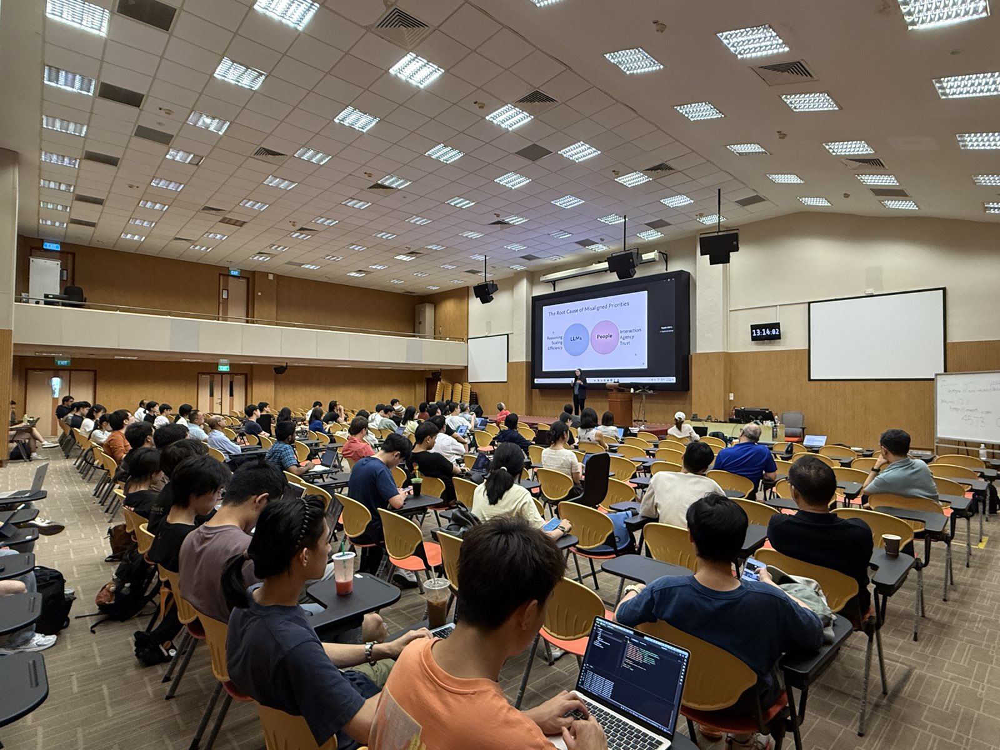

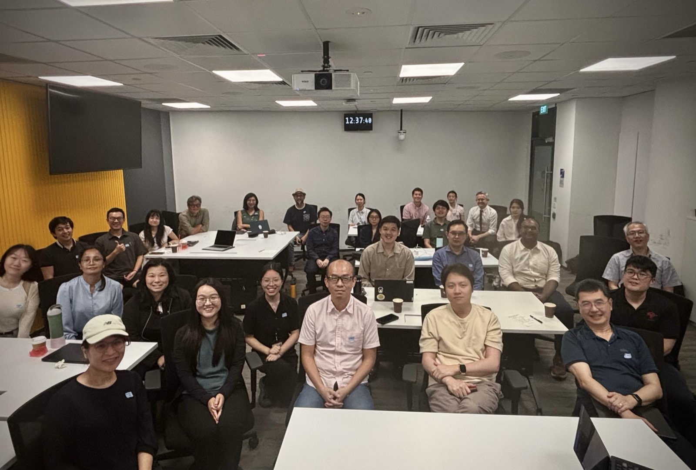
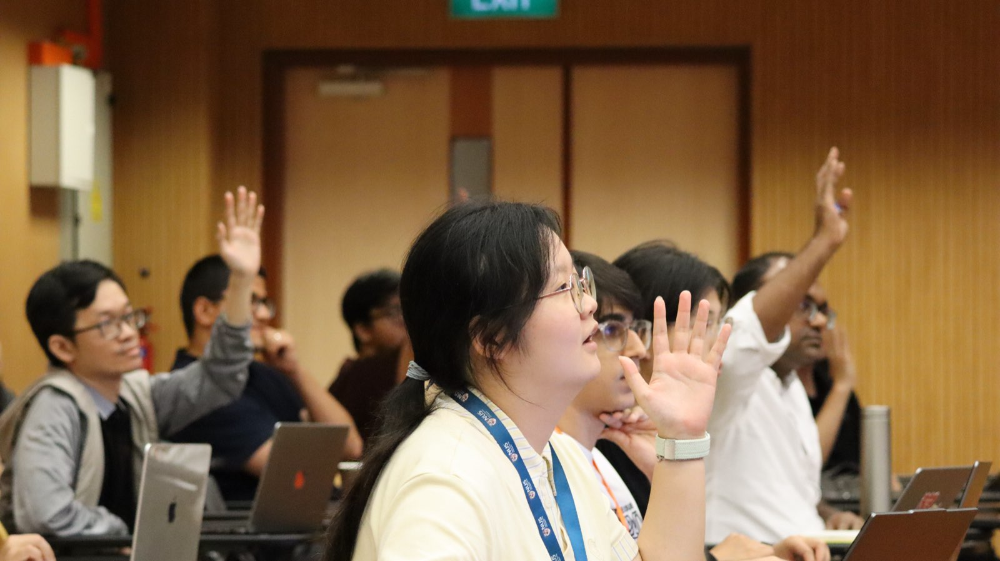
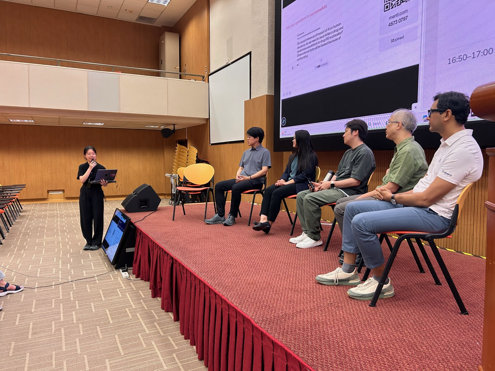
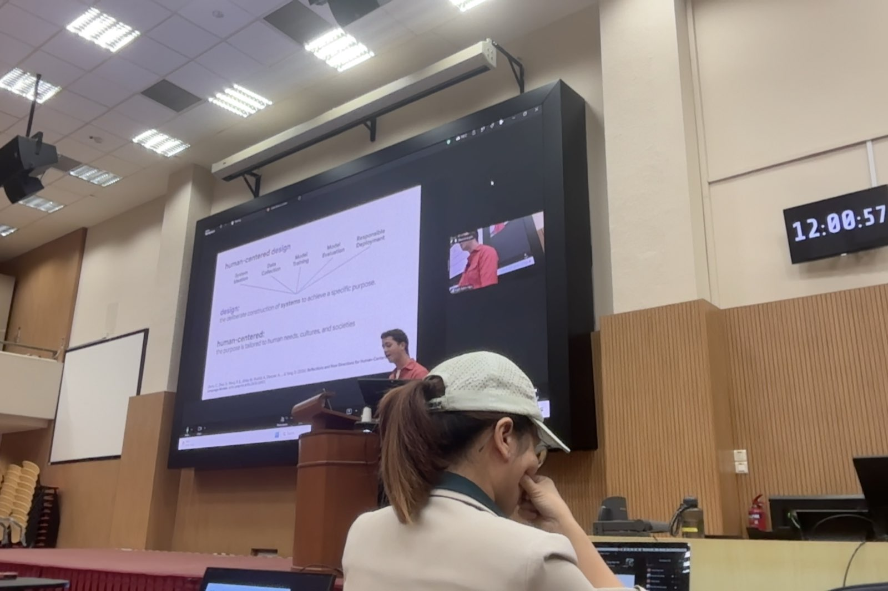
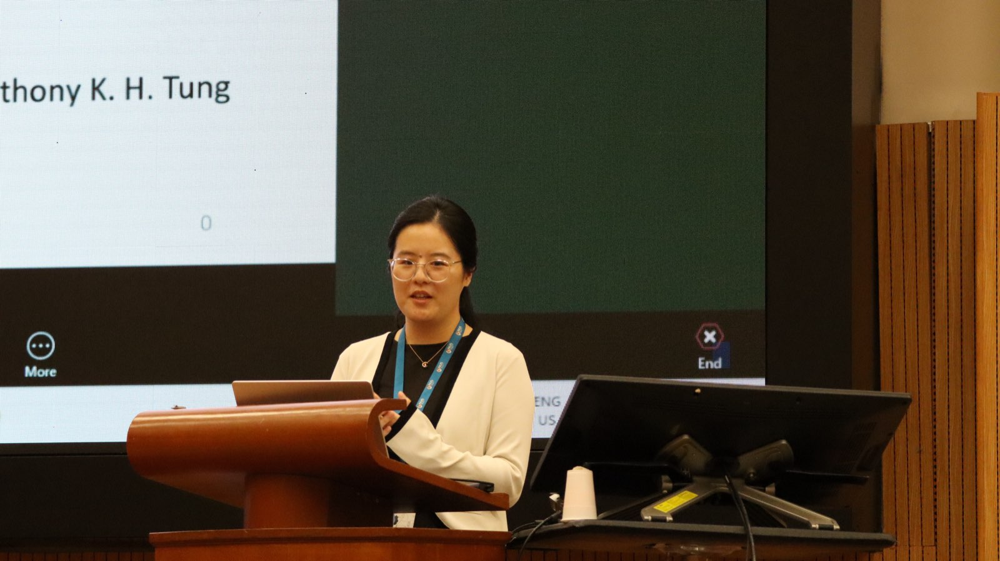
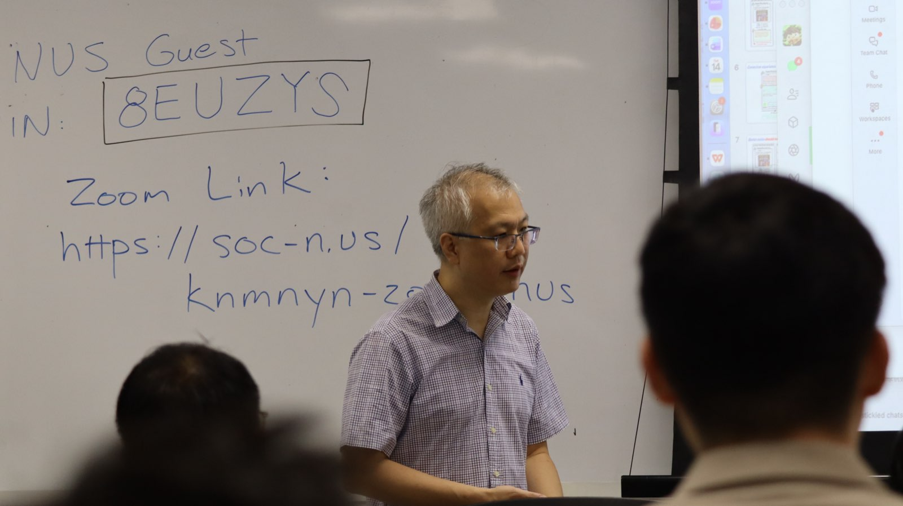
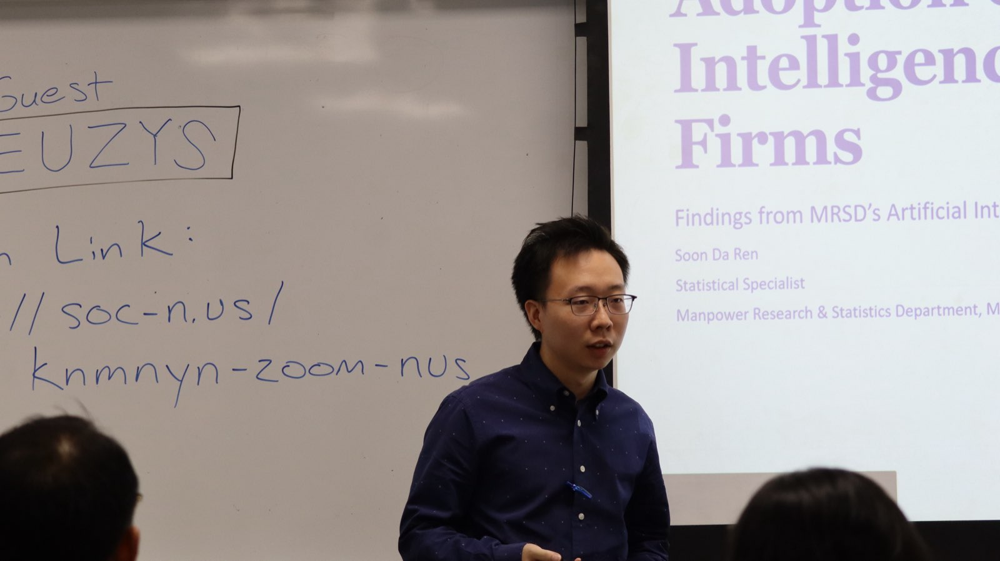
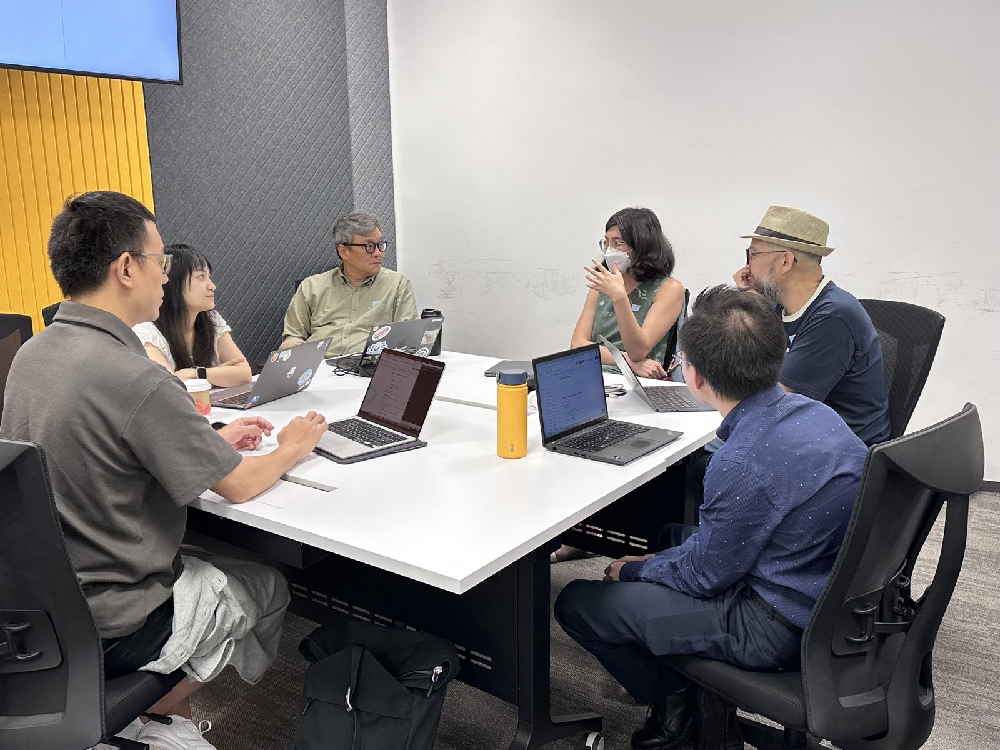
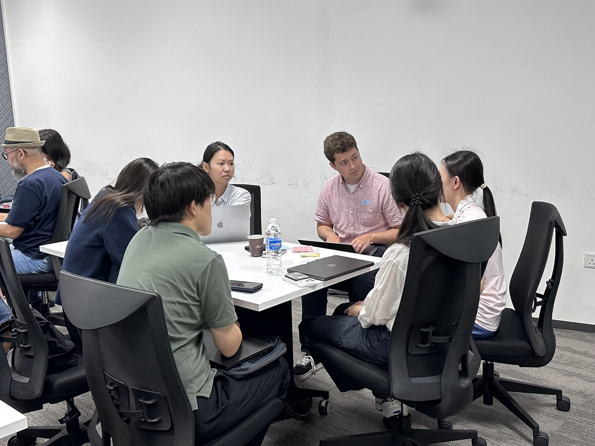
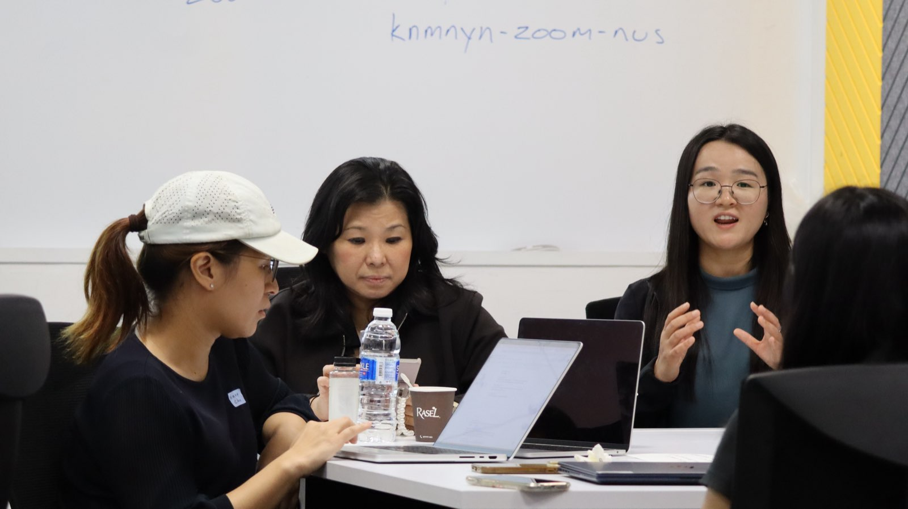
Participants list and AI summaries of sessions disseminated to workshop participants. For access, please contact the organisers. Information on the whitepaper draft will be announced known soon.
First CIVIC-AI Workshop.











CIVIC-AI is a collaboration bringing together researchers to examine the interplay between artificial intelligence, work, and society. It kicked off with an inaugural 2026 workshop between Stanford and NUS, involving policy makers and funding agencies as key collaborators in informing the research agenda and shaping outcomes.
Our central questions span cross-cultural dimensions of AI adoption, the future of work and automation, and what constitutes irreducible human value and advantage as AI capabilities grow.
The workshop is organized by Stanford and NUS faculty, staff, and students across SALT Lab and WING.NUS. The list below is grouped so future additions can be made without changing the page structure.
For questions or inquiries, please reach out to the organising committee: